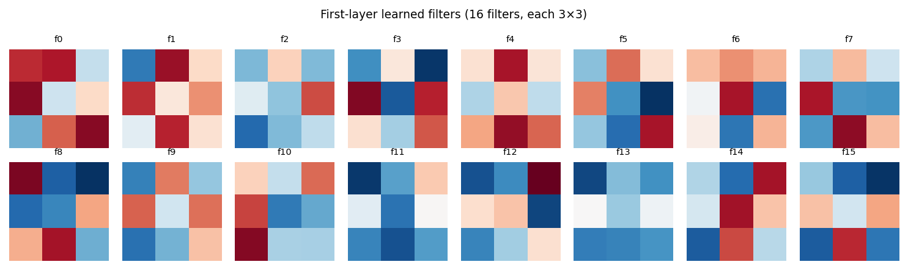
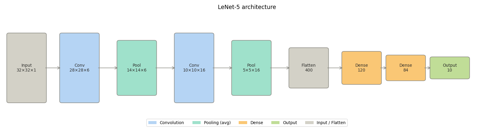
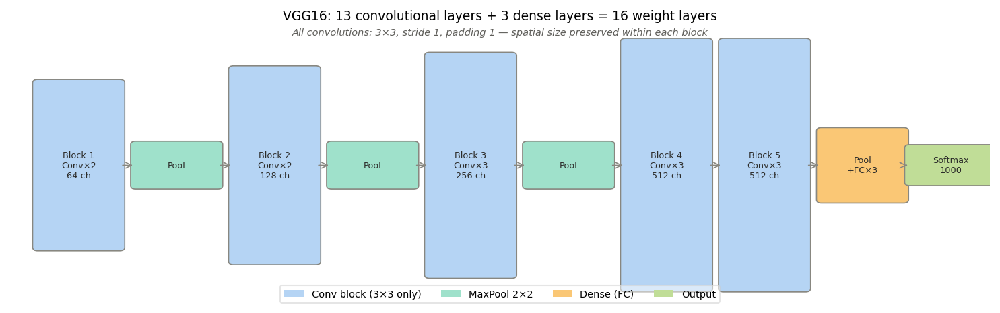

A convolutional layer learns a set of filters. Each filter slides over the input and produces one output channel — a feature map recording where that filter responds strongly.
nn.Conv2d(in_channels, out_channels, kernel_size) is the PyTorch layer. The weight tensor has shape: \((\text{out_channels},\ \text{in_channels},\ k,\ k)\)
One \(k \times k\) filter per input channel, for each of the out_channels outputs.
Parameter
Controls
in_channels
depth of the input (e.g. 3 for RGB)
out_channels
number of filters learned; depth of the output
kernel_size
spatial extent of each filter (typically 3)
stride
step size — stride 2 halves spatial dimensions
padding
border handling — padding=1 with a 3×3 kernel preserves spatial size
The channel dimensions (in_channels → out_channels) and the spatial dimensions (H, W) are controlled independently.
import torchimport torch.nn as nn# A single convolutional layer: 1 input channel → 8 output channelsconv = nn.Conv2d(in_channels=1, out_channels=8, kernel_size=3, stride=1, padding=1)# Weight tensor shape: (out_channels, in_channels, kH, kW)print("Weight shape:", conv.weight.shape)print("Bias shape: ", conv.bias.shape)# Apply to a batch of 4 grayscale images, 32x32x = torch.randn(4, 1, 32, 32)out = conv(x)print("Input shape: ", x.shape)print("Output shape:", out.shape)# spatial size preserved because padding=1 with kernel_size=3
The same 8 filters are reused at every spatial position. This is weight sharing: the \(32 \times 32 = 1024\) positions in the feature map are all produced by the same 9 weights per filter.
The reduction factor here is \(\approx 100\times\). On realistic images the gap is far larger.
After a convolution produces a feature map, pooling reduces its spatial dimensions by summarizing local regions.
Max pooling takes the maximum value in each non-overlapping window. A \(2 \times 2\) max pool with stride 2 reduces a \(64 \times 64\) feature map to \(32 \times 32\).
Average pooling takes the mean instead. Max pooling is more common in practice — it retains the strongest activation in each region.
Pooling serves two purposes:
Reduces spatial size, controlling the growth of computation as layers stack.
Provides local invariance: a feature detected one pixel to the left or right still produces the same pooled output, as long as it remains within the pooling window.
Pooling has no learned parameters. It is a fixed operation applied after the convolution and activation.
A single CNN block combines three operations in sequence:
Convolution — applies learned filters to produce feature maps. Linear.
Activation — applies a nonlinearity elementwise. ReLU is standard: \(f(x) = \max(0, x)\).
Pooling — reduces spatial dimensions. No learned parameters.
This is the repeating unit of a CNN. Stacking these blocks builds a hierarchy:
Early blocks detect low-level structure: edges, oriented gradients, color contrasts.
Later blocks detect higher-level structure: textures, parts, object-level patterns.
Each block sees a spatially smaller but channel-deeper representation than the one before it.
The spatial contraction at each block is controlled by stride and pooling. The channel depth is controlled by out_channels — and typically grows as spatial size shrinks, so that the total volume of information does not collapse too quickly.
After the convolutional blocks, the representation is a 3D tensor: (channels, H, W). Classification requires a fixed-length vector.
Flattening reshapes the 3D tensor into a 1D vector. If the final feature map has shape (32, 8, 8), flattening produces a vector of length \(32 \times 8 \times 8 = 2048\).
This vector is passed to one or more dense (fully-connected) layers — identical to the networks in the earlier presentations. The final dense layer produces the output: class logits for classification, or a scalar for regression.
Stage
Operation
Convolutional blocks
extract spatial features
Flatten
reshape to vector
Dense layers
classify or regress
This is where the spatial processing ends. The dense head has no knowledge of spatial structure — it sees only the vector of learned features. All spatial reasoning happened in the convolutional blocks.
The filters in a CNN are not hand-designed. Their values are the parameters \(\mathbf{w}\) learned by minimizing the loss — exactly as in a dense network.
The training procedure is identical:
Forward pass: input propagates through conv layers, activations, pooling, flatten, and dense layers to produce predictions \(\hat{y}\).
Loss:\(\mathcal{L}(\hat{y}, y)\) measures prediction error. Cross-entropy for classification, MSE for regression.
Backward pass: gradients \(\partial \mathcal{L} / \partial \mathbf{w}\) are computed via backpropagation through every operation, including the convolutions.
Update: an optimizer (SGD, Adam) adjusts all parameters.
The convolution is a linear map. Its transpose (used in the backward pass) is also a linear map — the gradient flows through it exactly as through a dense layer’s weight matrix.
A CNN is a neural network where some weight matrices are structured as sliding filters. The optimization machinery is unchanged.
import torchimport torch.nn as nnimport torch.optim as optimmodel = SimpleCNN(num_classes=10)optimizer = optim.Adam(model.parameters(), lr=1e-3)loss_fn = nn.CrossEntropyLoss()# One training stepx = torch.randn(32, 1, 28, 28) # batch of 32 imagesy = torch.randint(0, 10, (32,)) # integer class labelsoptimizer.zero_grad()logits = model(x) # forward passloss = loss_fn(logits, y) # compute lossloss.backward() # backprop through conv + dense layersoptimizer.step() # update all parametersprint(f"Loss: {loss.item():.4f}")print(f"Total parameters: {sum(p.numel() for p in model.parameters()):,}")
Loss: 2.3053
Total parameters: 206,922

Putting It Together
A complete CNN for image classification consists of three stages:
1. Feature extraction — convolutional blocks
Each block applies Conv2d → ReLU → MaxPool2d. Spatial dimensions contract, channel depth grows. Filters are learned; they detect progressively more abstract spatial patterns across blocks.
2. Transition — flatten
The final feature map (C, H, W) is reshaped to a vector of length \(C \times H \times W\). Spatial structure is discarded; what remains is a fixed-length descriptor of the image content.
3. Classification — dense layers
Standard fully-connected layers map the feature vector to output logits. This is identical to the networks from the earlier presentations.
The entire network — every filter weight and every dense weight — is trained end-to-end by minimizing the same loss with the same gradient descent procedure used throughout this course.
The only thing new about a CNN is the structured form of some of its weight matrices.
LeNet-5 (LeCun et al., 1998) established the template that all subsequent CNNs follow: alternating convolution and pooling layers, ending in fully-connected layers that produce class scores.
It was designed for handwritten digit recognition on \(32 \times 32\) grayscale images and achieved near-human performance on postal code recognition — a practical, deployed system.

LeNet-5 introduced three ideas that remain central:
End-to-end learning. Prior systems used hand-engineered features (Gabor filters, HOG descriptors) fed into a classifier. LeNet learned features directly from pixels by minimizing classification loss. The filters were not designed — they were found by gradient descent.
The conv → pool → dense template. This ordering — extract local features, reduce spatial resolution, classify — is the structural skeleton of every CNN that followed. VGG, AlexNet, and ResNet are all elaborations of this same pattern.
Shared weights across positions. Explicitly motivated by the observation that a feature useful in one part of the image is useful everywhere. This is the weight-sharing argument made concrete and deployed at scale for the first time.
What it could not do: tanh activations caused vanishing gradients in deeper networks. Training on small datasets. No GPU. Going beyond 7 layers was computationally and numerically intractable. These limitations defined the problems AlexNet would solve 14 years later.
ImageNet is a dataset of 1.2 million labeled photographs across 1,000 categories. The annual ImageNet Large Scale Visual Recognition Challenge (ILSVRC) benchmarked computer vision systems from 2010 onward.
In 2011 the best system achieved ~26% top-5 error using hand-engineered features. In 2012, AlexNet (Krizhevsky, Sutskever, Hinton) achieved ~16% — a reduction of nearly 40% in one year. No other entry was close. The field reoriented around this result.
AlexNet was LeNet’s template applied at a scale that required solving three concrete problems: activations, regularization, and optimization. Each problem had a specific solution.
ReLU activations. Sigmoid and tanh saturate — their gradients approach zero for large inputs, starving early layers of signal during backpropagation. ReLU, \(f(x) = \max(0, x)\), has gradient 1 for positive inputs and 0 otherwise. It does not saturate in the positive region. AlexNet trained 8 layers reliably with ReLU where sigmoid would have failed beyond 4-5 layers. This was the primary enabler of depth.
Dropout. With 60 million parameters and 1.2 million training images, overfitting was severe. Dropout randomly sets a fraction of activations to zero during each forward pass, preventing co-adaptation of neurons. At test time all units are active but scaled. It acts as an implicit ensemble of many sub-networks. AlexNet used dropout with \(p = 0.5\) in the dense layers.
SGD with momentum. Plain stochastic gradient descent updates parameters using the gradient of a single mini-batch — noisy and slow to navigate flat or curved loss surfaces. Momentum accumulates a moving average of past gradients:
With \(\mu = 0.9\), each update carries memory of the direction from previous steps, damping oscillations and accelerating convergence in consistent directions. AlexNet also used weight decay (\(\lambda = 5 \times 10^{-4}\), equivalent to L2 regularization) alongside momentum. Adam, used throughout this course, is the direct descendant of this idea — it adds per-parameter adaptive learning rates on top of momentum.
import torch.optim as optim# SGD with momentum — the optimizer used to train AlexNetoptimizer = optim.SGD( model.parameters(), lr=0.01, momentum=0.9, # ← accumulate gradient history weight_decay=5e-4# ← L2 regularization)
AlexNet used large, varied kernel sizes (11×11, 5×5, 3×3). VGG (Simonyan and Zisserman, 2014) asked a simpler question: what happens if you use only 3×3 convolutions, stacked as deep as possible?
The answer was VGG16 — 16 weight layers, exclusively 3×3 kernels, stride 1, padding 1 (so spatial size is preserved by each convolution and only reduced by max pooling). It achieved second place in ILSVRC 2014 and remains a standard baseline.
Why 3×3 only? Two stacked 3×3 convolutions have the same receptive field as one 5×5 convolution — they each pixel in the output depends on a 5×5 region of the input — but use fewer parameters and apply an additional nonlinearity between them:
Three stacked 3×3 convolutions cover a 7×7 receptive field with \(27C^2\) parameters versus \(49C^2\) for a single 7×7. More depth, fewer parameters, more nonlinearities.

Channel depth doubles after each pooling step: 64 → 128 → 256 → 512. Spatial size halves. Total volume stays roughly constant across the network.
Most parameters (~124M) are in the three dense layers — a property that motivated later architectures to replace the dense head with global average pooling.
By 2015 it was well understood that deeper networks should, in principle, be more expressive. A 56-layer network contains a 20-layer network as a special case — just set the extra 36 layers to the identity map. So a 56-layer network should perform at least as well as a 20-layer one.
It did not. He et al. observed that on CIFAR-10, the 56-layer plain network had higher training error than the 20-layer network. This is not overfitting — the training error itself was worse. The network could not even fit the training data as well with more layers.
The diagnosis: plain networks cannot learn identity maps through many stacked layers. With ReLU activations and random initialization, the effective gradient signal reaching early layers is too weak for them to converge to a useful function. The network degrades.
The fix: if a layer finds it hard to learn the identity, give it a shortcut. Add a direct connection that bypasses the layer, so the output is \(\mathbf{x} + F(\mathbf{x})\) instead of \(F(\mathbf{x})\). Now the layer only needs to learn the residual\(F(\mathbf{x}) = 0\) to implement the identity — a much easier target. This is the skip connection.
The skip connection provides a gradient highway: during backpropagation, the gradient flows directly through the addition to the earlier layers without passing through the conv-BN-ReLU chain. This keeps gradients from vanishing even in networks of 50–152 layers.
Impact: ResNet-152 achieved 3.57% top-5 error on ImageNet — below the estimated human error rate of ~5% on that benchmark. The same architectural idea scales to hundreds of layers without degradation. It is the dominant backbone in computer vision and influenced virtually every architecture that followed, including transformers.